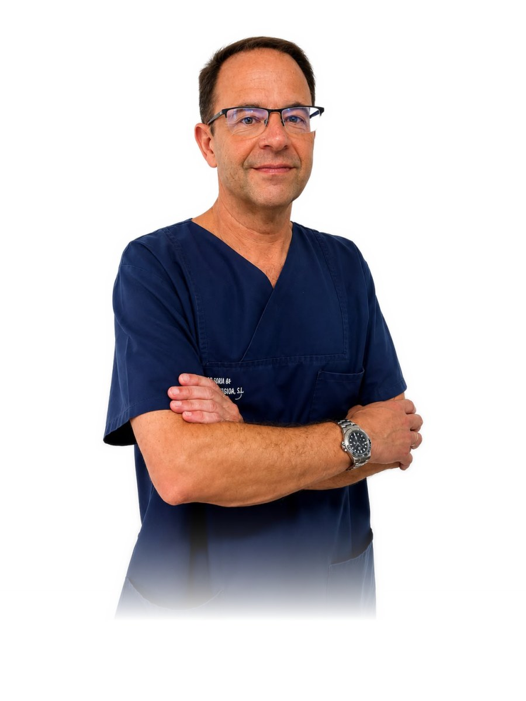

Cirugía e implantología01Equipo médico
Dr. John W. Scherba
Cirugía Oral y Maxilofacial · Implantología
Atención especializada en cirugía oral y maxilofacial e implantología, con valoración individual de cada caso.
Ver Currículum Vitae